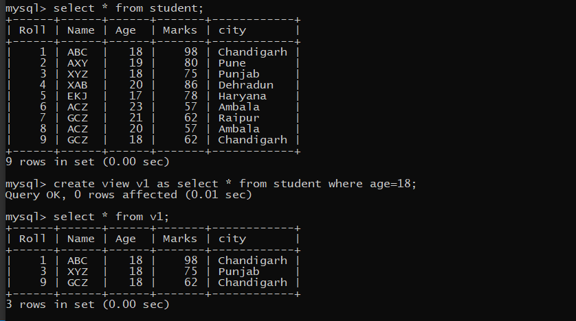
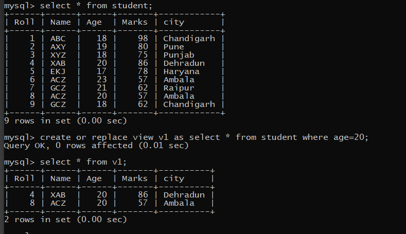

Syntax:-
CREATE VIEW view_name
as
SELECT column_list
FROM table_name [WHERE condition];
Example:-
~creat a view for the student belonging to age 20 of student table.

~In Oracle, the view continues to exist even after one of the tables (that the view is based on) is dropped from the database. However, if you try to query the view after the
table has been dropped, you will receive a message indicating that the view has errors. But, if you recreate the table (that you had dropped), the view will again be fine.
~A VIEW can be derived from another VIEW.
~The OR REPLACE Option allows a view to be created even if one exists with this name already, thus replacing the old version of the view for its owner. This means that the view can be altered without dropping, recreating and regranting object privileges.
Example:-

2. NEED OF VIEWS:-
~A view is required in several cases. Let us start with a simple requirement. Assume the table EMP is owned by user SCOTT. As the owner of the table SCOTT will have all the privileges on that table. Now, if another user JOHN wants to access EMP table, then SCOTT can grant permission to JOHN. But, if SCOTT doesn't want JOHN to access column SAL from EMP table then SCOTT cannot stop JOHN from accessing SAL column because after taking permissions, JOHN will have complete access to the table EMP. If SCOTT creates a new table from EMP table that includes everything from EMP table except SAL column and grants its permission to JOHN, then it fulfills the requirement but store a separate copy of the data.
Creating a view in the above requirement is quite ideal for two reasons:
1. It fulfills the requirement without storing a separate copy of the data, because a
view does not store any data of its own and always takes the data from base table.
2. As the data is taken from base table, accurate and up-to-date information is provided to JOHN. Yet the column to be hidden from JOHN is hidden as it is not part of the view.
3. ADVANTAGES OF VIEWS:-
~A view has the following adantages:-
4. DROPPING A VIEW:-
You can drop any view contained in your schema. To drop a view in another user's schema, you must have the DROP ANY VIEW system privilege. DROP VIEW statement is used to drop a view from a database. The syntax of DROP VIEW statement is:
Syntax:-
drop VIEW view_name
Example:-
drop VIEW v1;